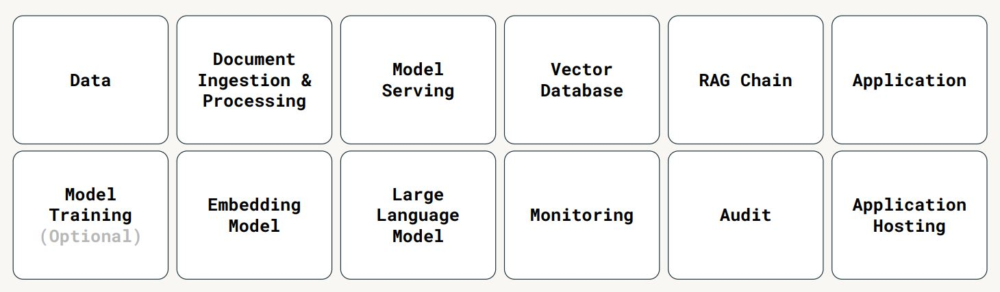
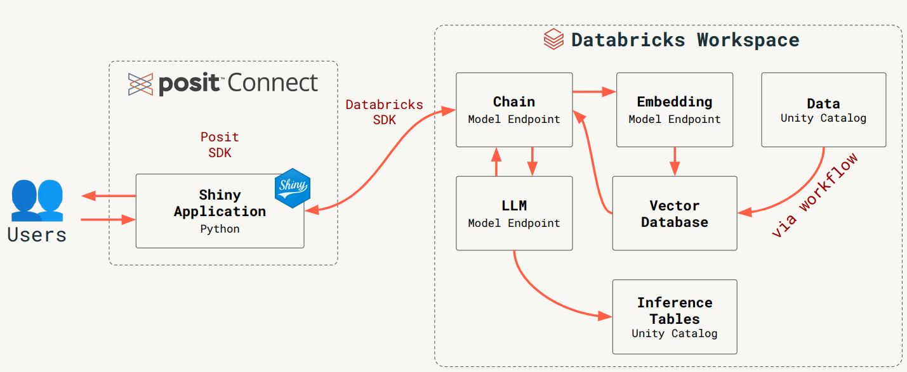

This Session Was Not Generated By AI
Elevating Enterprise Data Through Open Source LLMs
Session description
In an era where data privacy and security are paramount, many organizations are keen on leveraging Large Language Models (LLMs) in conjunction with their proprietary data without exposing it to third-party services. Recognizing this need, our talk, “Elevating Enterprise Data Through Open Source LLMs,” showcases an approach that integrates the capabilities of Databricks and Posit, enabling businesses to maintain ownership and control over their data and LLMs while delivering value to their customers. The core of our discussion revolves around a system architecture that synergizes the strengths of Databricks and Posit technologies, providing a comprehensive solution for enterprise data and open source LLMs. Databricks is responsible for data management and processing, offering a seamless environment for hosting, serving, and fine-tuning open source LLMs. Keeping data and models in the secure perimeter of Databricks lowers the risk of data exfiltration tremendously, and also benefits from the scalable data processing and machine learning capabilities - including recent acquisition MosaicML - that Databricks delivers. Posit steps in to streamline the process through Posit Workbench, the developer platform for data science with custom integrations for working with Databricks. This allows developers to write, test, and refine their code in a familiar and powerful setting while still being able to access the data, compute and model serving offered by Databricks. In addition, Posit Connect offers an easy to use platform for deploying these applications, ensuring that the end-to-end process, from development to deployment, is efficient, secure, and aligned with enterprise standards.
Attendees of this talk will gain valuable insights into constructing and deploying LLM-powered applications using their enterprise data. By the end of the session, you will have a clear understanding of how to leverage Databricks for optimal data management and LLM operations, alongside Posit’s streamlined development and deployment processes. This knowledge will empower you to deliver secure, effective, and scalable LLM-powered applications, driving innovation and value from your enterprise data while upholding the highest standards of data privacy and security.
Session notes
- RAG (Retrieval Augmented Generation)
- Retrieval: Set up model to have access to proprietary data, which can be retrieved and used for context
- Augmentation: Model is augmenting answer from “normal” LLM (large language model) using the retrieval property to use whatever data has been made accessible to the model
- Generation: Produces an answer to a user’s question, a report, etc.
- In some instances, model does not need to be re-trained when the proprietary data that it can retrieve changes
Legal and security have many arguments against using proprietary data with an API
AI chat-bot solution combining Databricks, Posit connect and Shiny conforming with legal and security requirements

- Demo at 10:57 shows solution combining Databricks, Posit connect and Shiny to chat with a chat-bot “as the user”, where the model only has access to what the user has access to
- See slides 11-14 for more information about the architecture, governance, security and more ressources
- See example below:

Using GitHub Copilot in R Shiny Development
Session description
Generative-AI tools, like the GitHub Copilot, is revolutionizing software development, and R Shiny is no exception. However, some important features of Shiny, including modularization, reactivity, interaction with CSS/JavaScript, and simulation-based testing pose unique opportunities and challenges to the use GitHub Copilot. The talk will start with integrating CoPilot with local and cloud Shiny development environments. Then, it will discuss best practices around context information and prompt engineering to improve the accuracy and specificity of Copilot suggestions. It will then demonstrate how Copilot can assist in various use cases of Shiny development, including UI/UX design, interactions with front-end languages and testing.
Session notes
- See the chattr R package, which provides an interface to LLMs directly in the Rstudio IDE
Prompt engineering
- Clear and precise formulations with single question
- Lead-in: Write
Answer:to make it answer in English rather than code - Refer to links to help it along if you already know something about the subject, you are asking about
- Make sure to have files open to provide context
- Have documentation for functions before prompting it to write tests, so it has the documentation as context
Uniquely Human: Data Storytelling in the Age of AI
Session description
In an era of overwhelming data and increasing reliance on AI, the enduring power of human storytelling becomes essential. Our brains are wired for narrative – it evokes emotion, builds connection, and motivates action. Data storytelling marries insightful analysis with captivating narratives that move audiences.
This presentation emphasizes the crucial role of data storytelling in an AI-driven world. It explores techniques for crafting impactful narratives from data, balancing human creativity with the speed of AI. The talk also touches on principles of ethical storytelling, highlighting how to build trust and transparency when leveraging AI.
Session notes
Essence of talk: Great storytelling requires context, a great story and impact for the receiver. Examples in talk of AI not being able to understand context - we need humans for great storytelling.
Using Generative AI to Increase the Impact of Your Data Science Work
Session description
Over the past year plus, generative AI has taken the world by storm. While use cases for helping people with writing, code generation, and creative endeavors are abundant, less attention has been paid to how generative AI tools can be used to do new things within data science workflows. This talk will cover how Google’s generative AI models, including Gemini, can be used to help data practitioners work with non-traditional data (text, images, videos) and create multimodal outputs from analysis, increasing the scale, velocity, and impact of data science results. Attendees should expect to come away with ideas of how to apply Google generative AI tools to real-world data science problems in both Python and R.
Session notes
Gemini
- Natively multimodal: Can take in text, audio, video, images, etc.
- Sophisticated reasoning: Can give summary based on combination of files/inputs
- Robust ecosystem
Example use case: Get summary of podcast purpose, host personalities, common questions, etc. from inputting 5 episodes.
Using AI to interpret and explain results
Case: Predict number of medals at the olympics
- Create a description of the prediction for each country with an explanation of the prediction
- Post-olympics: Compare actual medal counts to predictions, and find interesting countries that exceeded expectation or fell short
Create prediction description for each country
- Create a plot of Shapley values
- Full prompt to AI gives context: “You are a data scientist who does a great job of explaining various outputs from data analysis and modeling, including numbers, tables, and plots, to help a more general audience understand your results better. Other details of model and what Shapley values are and how they are presented in the plot. Stick to only the data and information provided in creating your response. Your response should be understandable by a non-technical audience, 100 word or fewer, and in English.
- Parametrise the AI prompt by using gemini API in R using
reticulate::importto import thevertexaiPython library - see the code from the Jupyter notebook used to produce the slides
Summarise information of prediction vs. actual outcome
Takes Gemini Pro about 4 minutes to analyse and produce summary across all 200+ countries for 40 languages.